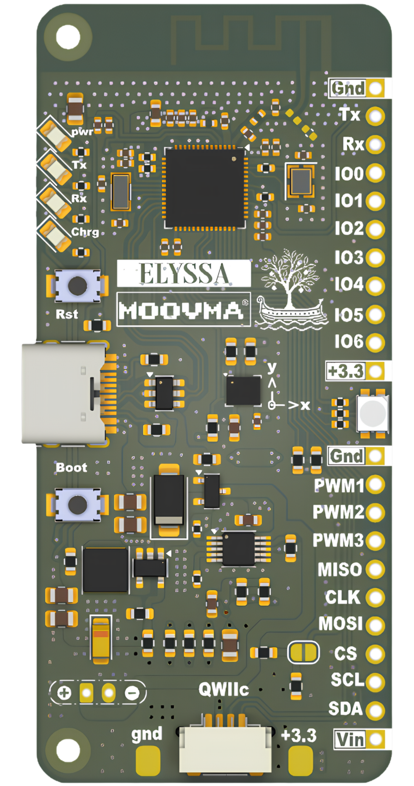
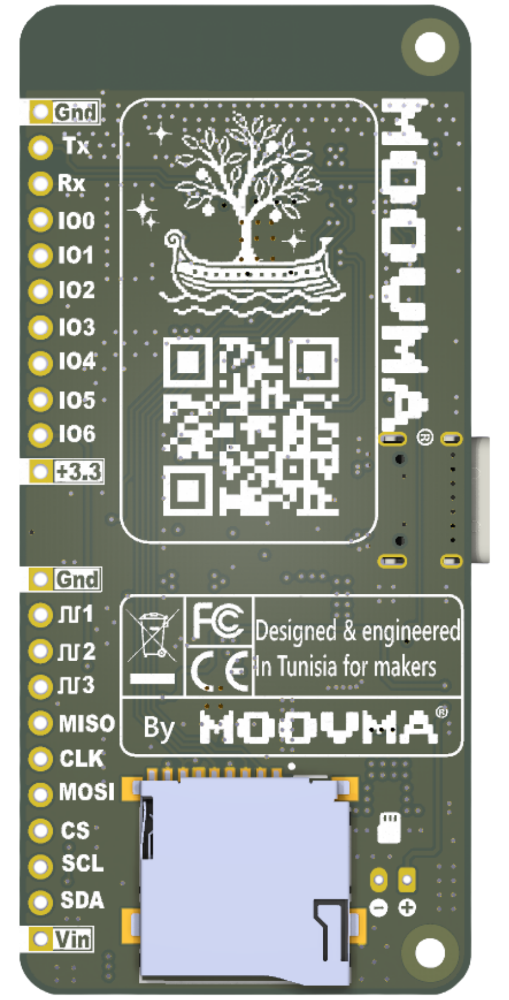

ESP32-S3FN8 MCU
The board’s main computer: dual-core 240 MHz processing with Wi-Fi and Bluetooth LE 5 for connected builds.
 GitHub
GitHub


Moovma presents
An ESP32-S3 board with motion sensing, wireless connectivity, and a documentation-first workflow for curious makers.
Rotate the board and inspect the components that matter. Passive parts stay quiet so the real architecture can come forward.
The board’s main computer: dual-core 240 MHz processing with Wi-Fi and Bluetooth LE 5 for connected builds.
The LSM6DS3TR-C reads acceleration, rotation and temperature on its own I2C bus, ready for gestures and orientation.
The onboard BQ24092 handles battery charging and power-path management for portable prototypes.
A dedicated power rail keeps the board supplied efficiently when your project is drawing current.
Three independent channels give your firmware an immediate visual signal: red, green, blue or any mix.
Local storage on a dedicated SPI bus. Selecting this step turns the board to reveal the socket on the back.
Wireless, motion-aware and ready for the Arduino IDE. Elyssa keeps the useful stuff close, so your attention can stay on the thing you’re making.
Explore the full feature list ↗LSM6DS3TR-C accelerometer, gyroscope and temperature sensor on a dedicated I2C bus.
↗ESP32-S3 dual-core power with Wi-Fi and Bluetooth LE 5 built into the board.
↗microSD, Qwiic, LiPo charging, native USB-C and a generous maker-friendly header.
↗Elyssa gives prototypes a capable, dependable home. No mystery hardware. No locked-in black box.
Elyssa works with the Arduino IDE. Install the board package once, plug in the board, and upload your first sketch in a few minutes.
Full guide on GitHub ↗Download and install the latest Arduino IDE 2 for your system. On Linux and macOS you also need Python 3.
Download Arduino IDE ↗Open File → Preferences and paste this link in Additional boards manager URLs:
https://raw.githubusercontent.com/yassinechouk/Elyssa-dev-board/main/elyssa-arduino/package_moovma_elyssa_index.json
Then open Tools → Board → Boards Manager, search Moovma and click Install.
Plug Elyssa in with a USB-C data cable. Select Tools → Board → Moovma → Elyssa, then Tools → Port and pick the port labelled Elyssa. Leave the other Tools options at their defaults.
Open File → Examples → 01.Basics → Blink and click Upload. The on-board LED starts blinking.
Hold BOOT, press and release RESET, then release BOOT. Select the port that appears and upload again. This is usually only needed once.
Pick up the board, open the examples, and let the first blink become whatever comes after.
Get started ↗